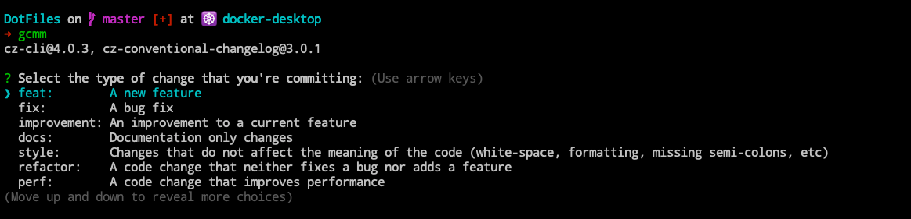
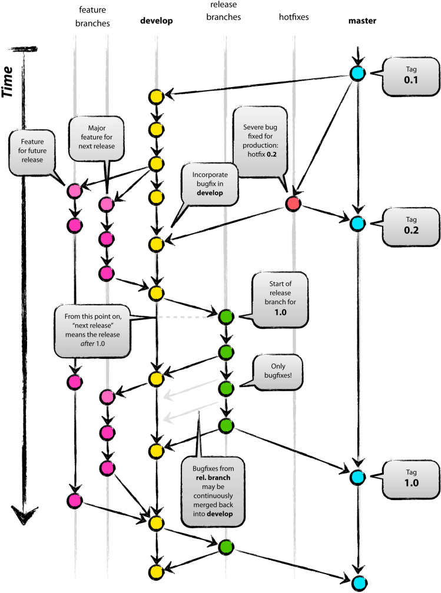
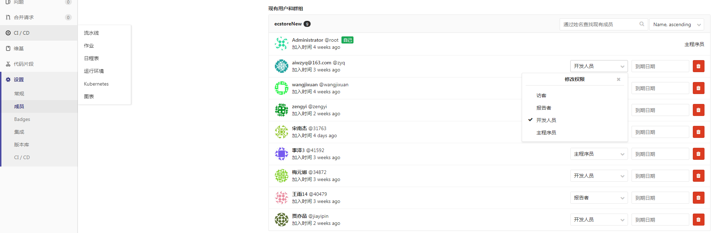
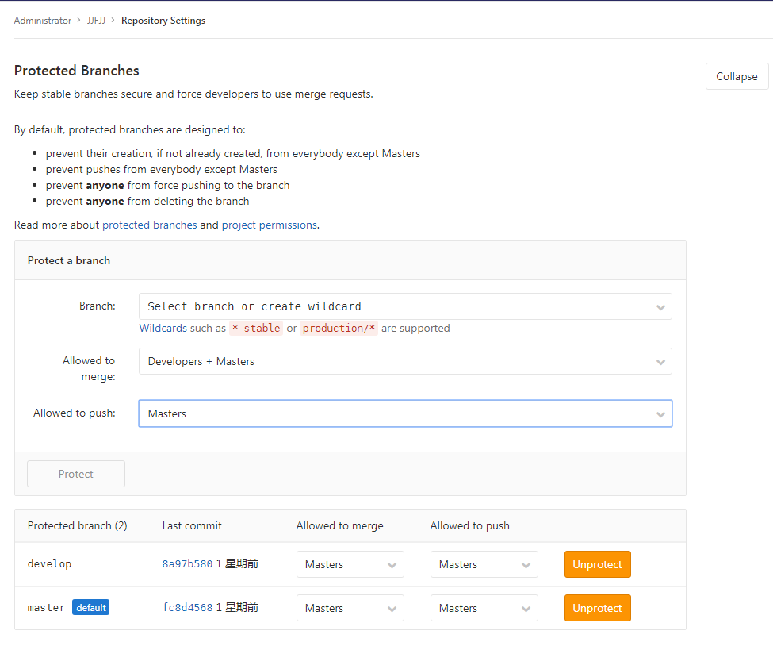
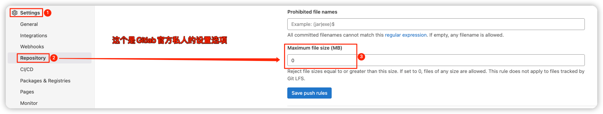
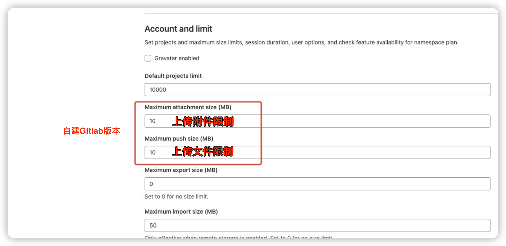

总结自己工作的一些项目管理的经验和教训

1. 代码规范
对于提交信息进行规范，不会出现很多花里胡哨的操作！
提交代码其实是有很多讲究的，如果我们都按照自己的想法随意的提交代码，到最后自己都不知道当时这次提交到底是为了解决什么问题了。良好的代码提交习惯即有利于自己之后的审查，也有助于其他人观看，同时利用脚本来提取有价值的信息。如查看人个人的工作量，每日的工作任务，等等。
- [1] 提交模板
我们更多使用的是如下简化版 commit 模板：
# 模板格式
<提交类型>-<项目名称>: <本次代码提交的动机>
# 示例说明
feat-Pandas: update runtime to V1.3.0
- [2] 类型分类
| 提交类型 | 类型说明 | 使用频率 |
|---|---|---|
feat |
增加新功能 | 高 |
fix |
修复 Bug 问题 | 高 |
perf |
提高性能的代码 | 高 |
style |
编码规范或风格上的修改并不影响功能 | 高 |
docs |
仅改变项目文档 | 高 |
build |
改变项目构建流程或包依赖 | 低 |
ci |
改变 CI 配置或执行脚本 | 低 |
test |
添加缺失测试或更正现有测试 | 低 |
refactor |
代码重构; 代码更改既不修复错误也不添加功能 | 低 |
chore |
其他修改; 比如构建流程/依赖管理等 | 低 |
- [3] 使用 Commitizen 工具
使用 cz-cli 代替 git commit 来提交代码，更新方便好用。
# 全局安装
npm install -g commitizen cz-conventional-changelog
# 添加配置
echo '{ "path": "cz-conventional-changelog" }' > ~/.czrc
全局安装后使用 git cz 代替 git commit 就可以了。

2. 分支管理
仓库如何进行分支划分和使用，是需要讲究的！

- [1] develop 分支 - 开发分支
develop 分支作为常驻开发分支，用来汇总下个版本的功能提交。在下个版本的 release 分支创建之前不允许提交非下个版本的功能到 develop 分支，develop 分支内容会自动发布到内网开发环境。确保 develop 分支随时可编译、可运行，上面的功能模块是相对稳定、干净的，随时可以在 develop 上拉 feature 分支进行开发。
- [2] feature 分支 - 功能分支
对于新功能开发，应从 develop 上切出一个 feature 分支进行开发，命名格式为 feature/project。其中功能名使用小写单词结合中划线连缀方式，如 feature/update-web-style。feature 分支进行编译通过并自测通过后，再合并到主干 develop 分支上。
- [3] master 分支 - 主分支
当 develop 分支开发完成一个版本的时候，测试没有问题之后就可以将其提交之后合并到 master分支了，master 分支内容会自动发布到内网正式环境。需要注意的是，一般情况从开发分支合入到主干分支不会有代码冲突的，如果有的话那就是没有按照上述流程严格执行的结果。
- [4] release 分支 - 预发布分支
最后就到了发包的最后阶段了，将已经在 master 内网正式环境上测试没有问题的版本合入 release 分支，打包给客户部署或者更新线上环境，完成最后的更新操作。
3. 代码审查
代码审计和代码评估是非常好的一件事情！
- [1] 代码审查
基本上所有的代码管理工具都具有 Merge Request 这个功能，所以我们可以使用 GitLab 自带的这个功能进行代码审查。和它的命名一样，是一个将一个分支合并到另一个分支上的请求。通过 GitLab 的 merge requests 功能，我们可以对比两个分支的差异、逐行地去 Review 和讨论改动内容、将 MR 指派给任何已注册用户、通过 UI 界面去解决代码冲突等等。
[2] 整体思想
- 将
CodeReview日常化，来培养团队成员规范编码及最佳实践编码的习惯 - 至少
2个人去共同负责一份代码，Review的同时降低跨模块协作时的理解成本 - 定期(比如每周五)，回顾本周进行
CodeReview中普遍性问题
- 将
[3] 代码审查
为了确保提测后 debug 修复效率，并避免因频繁进行 Code Review 而打断其他成员工作，现阶段仅在 feature 分支合并 develop 分支时进行 MR 与 Code Review。在 Release 分支进行 bug修复以及 develop 分支上进行非常小粒度的开发时不需要提 MR，重要功能一定要提 MR。
Code Review 内容涉及编码规范及最佳实践，在编码规范及需要小范围改动的最佳实践修复后进行分支的实际合并。对于改动较大且影响范围较低的代码，可以安排在 debug 阶段或版本末期进行重构，随下个版本提测后发布。进行 Review 的人员及项目负责人应尽到 Review 责任，并且建议大家平时多去 Review 他人代码，帮助团队成员共同提高。
- [4] 提交技巧
当完成 feature 分支的开发并进行了自测，想要向开发分支 develop 合并时，通过登录 GitLab提出 MR 请求。考虑研发成本及 bebug 效率，不强制所有代码提交均进行 MR 的 Code Review。
但是以下情况需要明确提 Code Review 请求：
- 开发完成一个相对独立、具有一定业务复杂性的功能模块，需要将
feature分支合并至develop分支时； - 也许该模块编码逻辑并不复杂，但对于业务或技术方面十分重要时；
- 当代码中存在自己不确定的实践方式，需要他人帮助、建议时；
- 业务模块中存在尚未普及到团队的技术解决方案时；
- 实习阶段和试用期阶段的同学，编码提交需要进行
Code Review；
以下情况可以酌情不进行 Code Review：
- 对
release分支上bebug及功能完善 - 对
develop分支上进行的小粒度功能修复、完善
4. 权限控制
对分支进行代码报错，防止推送出现问题！
对于代码仓库而已，限制用户的使用权限其实还是很重要的，不然他们就可能会偷偷的把执行分支合并甚至 git pull 来破坏线上环境。而 Gitlab 就原生的提供了分支权限管理的功能，我们可以将用户进行分类，之后根据不同的需求对用户授予不同的权限。

| 编号 | 人员类型 | 中文解释 | 对应功能 |
|---|---|---|---|
| 1 | Master |
主程序员 | 仓库管理员(运维) |
| 2 | Developer |
开发人员 | 项目的核心开发和贡献者(开发) |
| 3 | Reporter |
报告者 | 只有读权限并可以创建代码片段(测试) |
| 4 | Guest |
访客 | 只能提交问题和评论(其他人) |

Allowed to merge 就是分支合并权限，Allowed to push就是推送权限，这两个可以根据不同人的身份进行控制。如果受保护，除了 master 权限的人员，其余人都不可以 push、delete 等操作。默认情况下 master 分支是处于被保护状态下的，developer 角色的人是无法提交到 master分支的。
5. 上传限制
限制大文件的上传，必须走 LFS 才可以！
在日常使用中，开发或多或少会发现一些 “事故”，比如推送了大文件到了 Gitlab 服务器上面，如果恰好也没有使用 lfs 的话，会导致整个仓库受到污染。虽然，可以使用其他方式对提交进行检查(pre-check)，但是如果在仓库中进行限制可以很大程度保证这样问题的出现。可以参考 How can I limit file size to 50MB in GitLab? 进行实际操作。
- 限制代码文件上传大小为
2MB - 限制
issue附件上传大小为100MB

